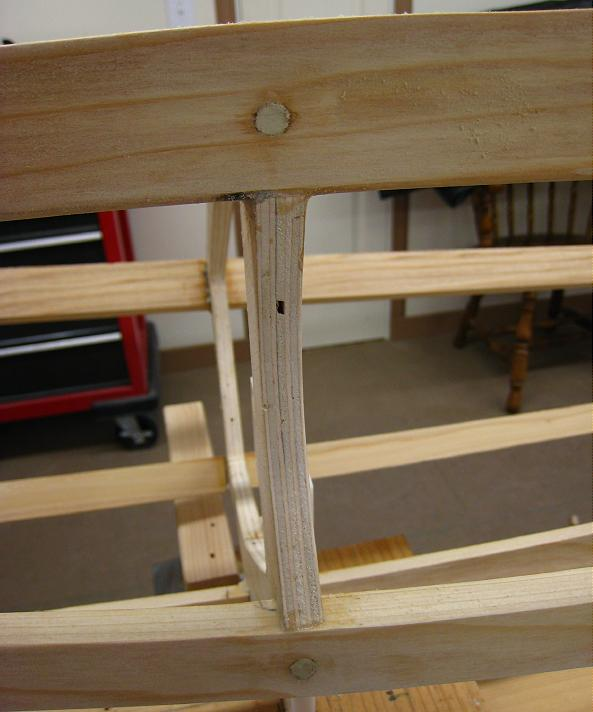

| Peg / Glue Frame | Menu Previous Page Next Page |
|

Wipe off any excess glue with a damp cloth. On the Sea Bee above, only the gunwales and chines were pegged / glued though all stringers could have been done this way, as on the Sea Rider. The Sea Bee's keel and deckridge were secured by lashing / gluing to demonstrate another very strong technique. Note - The distortion in the pic is due to use of a 28mm lens.
|
|